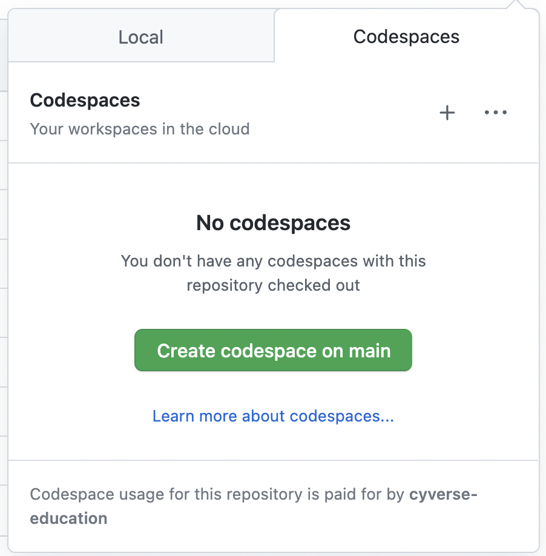
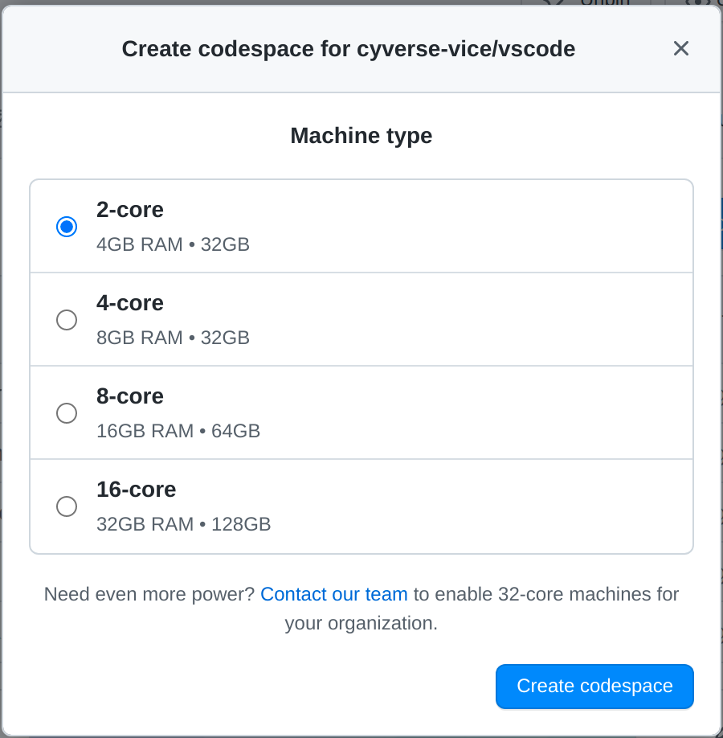
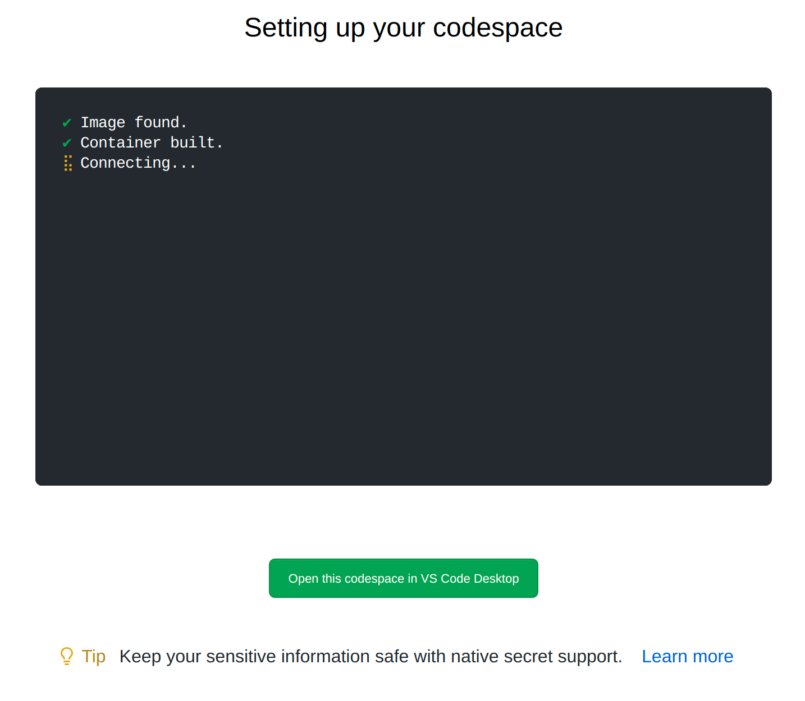
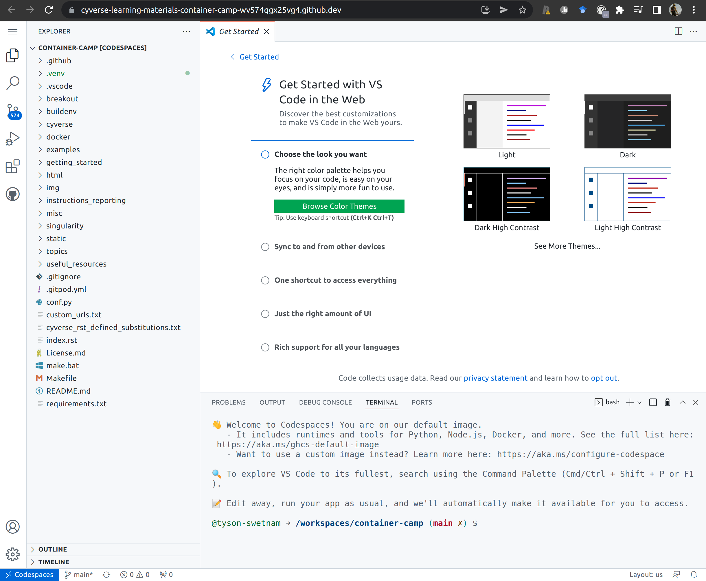

GitHub CodeSpaces¶
For this workshop, we are working in GitHub CodeSpaces. You will be given access to an organization where CodeSpaces have been enabled for the duration of the workshop.
What is a 'Development Environment'?
A development environment or "dev environment" for short, is a place where software can be written and tested without impacting users or "production environments" as part of the software lifecycle.
Containers-within-containers are another way to think about this paradigm. We create a containerized Integrated Development Environment (IDE) container which has all of our favorite software development tools and visual software (e.g., VSCode) where we can write our program and try out new package installations.
Terminology:
Development Environment: Environment for development tasks such as designing, programming, debugging, etc.
Test Environment: an environment with the same configuration as the "production environment" where testing can be done without interrupting the main service, also called Q/A or "Quality Assurance Environment".
Staging Environment: Where the work from testing is merged into the built system before public release.
Production Environment: The environment where users interact with the now-public tools.
GitHub CodeSpaces provides you with a fully featured Dev Environment running on Microsoft Azure.
You have been granted access to GitHub Education, and can use CodeSpaces and CoPilot during the workshop.
CodeSpace links with your GitHub account for a seamless experience working on code in a Git repository.
CoPilot is an AI programmer assistant that can help you write code using comments as prompts.
How can you get your own educational GitHub & CodeSpaces?
You can gain access to discounted GitHub CodeSpaces by enrolling your GitHub account with GitHub Education and then applying the educator discount to your organizations and repos.
Not interested in using GitHub based dev environments? Check out GitPod or GitLub Education and Developer Environments
How do I use CoPilot?
Install and enable CoPilot on your VSCode (locally, logging into GitHub, or remotely in CodeSpace).
Try adding a comment to the top of a file, like your new Dockerfile, wait a few seconds
Starting a CodeSpace¶
When a GitHub Organization and Repository have CodeSpaces enabled you will see a "Code" button above the README.md

Click on the "Code" button and start a new CodeSpace

Select the size of the CodeSpace you want (2-4 cores and 4GB to 8GB of RAM should be plenty for today)

Click "Create CodeSpace"
You will be taken to a loading screen, and after a few moments (<2 minutes) your browser will change to a VS Code instance in your browser.

Notice, the GitHub repository where you initiated the CodeSpace is set as the working directory of the EXPLORER in the upper left side of VS Code interface. You're in your Git repo, and are able to work with Python, Docker, Node, or any one of many featured developer tools. Further, you can install any tools you like!
